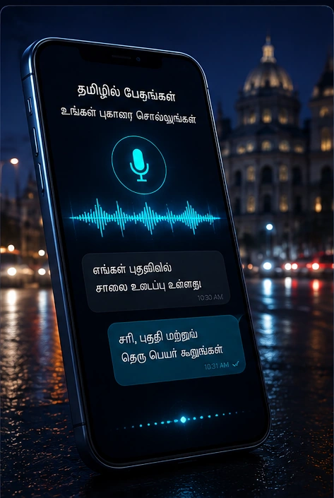

01
Tamil/Tanglish Citizen Complaint Voice Assistant
End-to-end Voice AI · LLMA citizen describes a local problem out loud in Tamil or Tanglish. The system transcribes it, works out what the problem is and where it is, asks for the detail it is missing, routes it to the right department, files it with a ticket number, and reads the result back in spoken Tamil.
- 80.1% 55.0%WER, first fine-tune
- 24issue categories
- 25departments routed
- 0.139real-time factor
Read the full case study
Private repository — code not public
Technical evidence
Results (measured)
Fine-tuning the ASR on the deployment's own code-mixed speech is what moved the system, after swapping pretrained models did not. Two rounds of fine-tuning, each evaluated against the version it replaced:
| Comparison | WER | CER | English words kept in Latin script |
|---|---|---|---|
| Untrained base model → first fine-tune (89 clips) | 80.1% → 55.0% | 77.2% → 39.4% | 0% → 37.4% |
| First fine-tune → second fine-tune (107 clips) | 49.8% → 46.6% | 32.8% → 30.8% | 37.9% → 38.5% |
| Spontaneous citizen clips only (9 clips) | 83.8% → 69.3% | — | — |
Runtime, measured on the same evaluation: average 0.533 s, p50 0.474 s, p95 1.091 s, real-time factor 0.139.
Read the WER honestly. 46.6% is high in absolute terms.
Code-mixed Tanglish is punishing to score — a word written in the other
script counts as a whole error — so the meaningful figure is the gap
between two systems on the same clips under the same metric, not the
absolute value. District and area name recall remains unsolved at
0 / 6 across both rounds.
Engineering details
Problem
Filing a civic complaint means a form: the right department, the right category, an address written the way the system expects. A citizen who would say "enga area-la water problem irukku" out loud has to translate that into someone else's schema before anything happens. The speech-first route removes the form, but only if the system can handle how people actually talk — Tamil and English mixed inside a single sentence.
Solution
A spoken-dialogue system that takes a complaint from speech to a routed, ticketed record without a form. Audio streams from a mobile client to a Python voice server over a WebSocket; voice activity detection decides when the citizen has finished speaking; the utterance is transcribed, classified into one of 24 civic issue categories, and checked for the details a complaint needs. When the area or street is missing, the assistant asks for it and waits, rather than filing an incomplete record. The finished complaint is mapped to one of 25 departments, stored with a sequential ticket number, and read back in spoken Tamil.
Technology
- Client: Flutter mobile app
- Transport: WebSocket audio streaming
- Server: Python, asynchronous
- VAD: WebRTC VAD, 20 ms frames
- ASR: Whisper-medium fine-tuned with LoRA, served through CTranslate2; cloud ASR providers as alternate routes
- Understanding: LLM provider plus a rule-based intent and location layer
- TTS: neural text-to-speech for the Tamil reply
- Testing: pytest; an offline harness drives the dialogue with text and asserts what was filed
Engineering challenges
- Code-mixing broke every off-the-shelf ASR. Each engine tested transliterated the English words into Tamil script, which corrupted the routing stage downstream. The base Tamil Whisper model kept 0 / 289 English words in Latin script.
- Turn-taking. Deciding when a speaker has stopped — rather than paused — is what makes a voice assistant feel usable, and it is handled at the VAD frame level.
- Incomplete complaints. Spontaneous speech rarely contains everything a complaint needs, so the dialogue has to distinguish a problem description from an area name and ask only for what is missing.
- Correctness that a crash test cannot catch. The failures that matter are wrong filed data — a problem fragment parsed as an area, an unroutable department — so the test harness asserts the resulting record, not that the code ran.
My contribution
Implementation verified in the project repository:
- Real-time voice server: WebSocket audio ingestion, VAD-driven turn-taking, audio preprocessing ahead of transcription
- Complaint dialogue: intent and category classification over 24 civic issue types, including a Tanglish keyword layer
- Location understanding: area, street, sub-area and ward extraction with alias and fuzzy matching, plus the follow-up questioning that fills the gaps
- Department routing across 25 departments, ticket numbering that survives restarts, and a query CLI over the filed complaints
- ASR fine-tuning: dataset preparation from human-verified transcripts, LoRA training, evaluation harness, and the promotion gate on WER, CER and latency
- Test suite covering turn-taking, transcription confidence gating, TTS caching and the dialogue itself
This system was built in a private repository. No source code, internal URLs, infrastructure details or citizen data appear on this site — only architecture, methods and evaluation results.